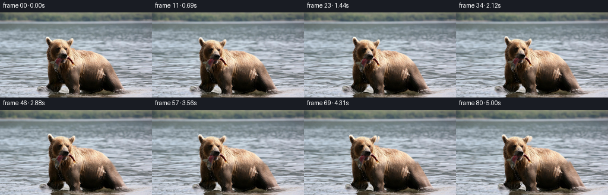
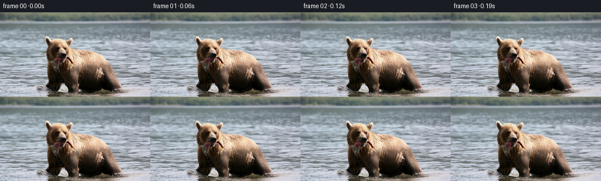
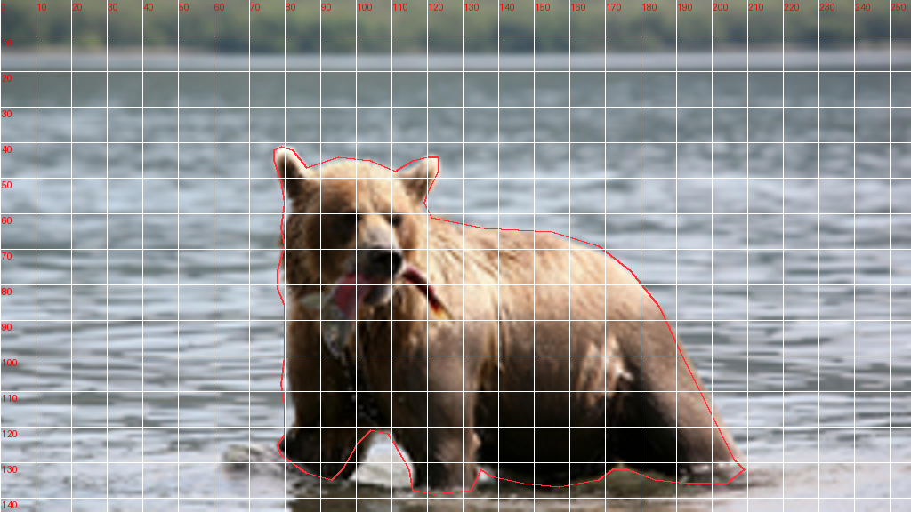
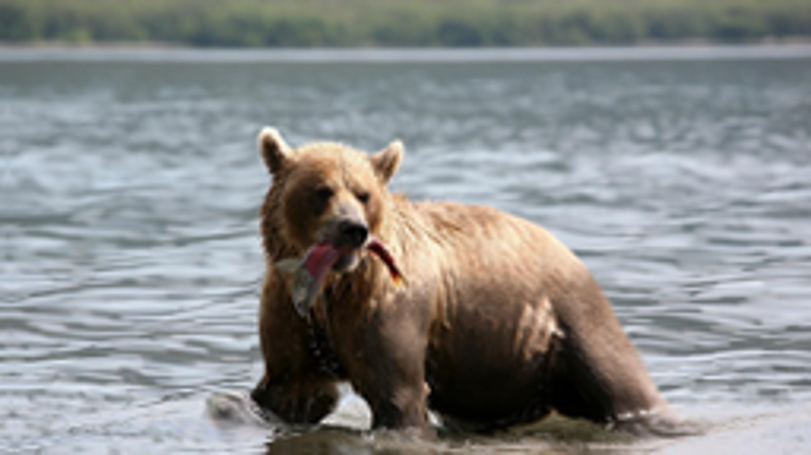

CODING AGENTS AS PIXEL WORLD MODELS
traex/GPT-6.1-Sol · 0872_s2
点击播放 · 原生 RGB 像素
逐轮保存的候选
回放视频、检查图与代码变化。
每份候选均可单独播放。实际图片检查记录在下方工具轨迹中。
候选 01播放与检查图
点击播放 · 原生 RGB 像素


展开代码变化
--- 上一保存版本
+++ 本次保存版本
@@ -0,0 +1,133 @@
+"""Deterministic image-based animation using only the supplied RGB photograph.
+All motion is generated by continuous geometric fields; no models/assets used.
+"""
+from pathlib import Path
+import numpy as np
+from PIL import Image, ImageDraw
+import cv2
+from scipy.ndimage import gaussian_filter, distance_transform_edt
+import artifact_io
+
+ROOT = Path(__file__).resolve().parent
+H,W = 144,256
+Y,X = np.mgrid[:H,:W].astype(np.float32)
+
+def smooth(a,b,v):
+ z=np.clip((v-a)/(b-a),0,1)
+ return z*z*(3-2*z)
+
+def polygon(points):
+ im=Image.new('L',(W*4,H*4),0)
+ ImageDraw.Draw(im).polygon([(int(x*4),int(y*4)) for x,y in points],fill=255)
+ return np.asarray(im.resize((W,H),Image.Resampling.LANCZOS),dtype=np.float32)/255
+
+BEAR=[(77,45),(77,42),(79,41),(82,42),(86,47),(95,44),(104,45),(111,48),
+ (116,45),(120,44),(123,44),(123,48),(120,54),(119,57),(121,61),
+ (136,64),(155,65),(168,69),(177,76),(185,86),(191,99),(199,115),
+ (206,129),(209,132),(204,136),(193,136),(184,135),(176,132),
+ (172,132),(168,135),(157,137),(147,136),(138,134),(135,132),
+ (133,136),(132,138),(122,139),(116,138),(115,132),(111,125),
+ (109,122),(104,121),(100,125),(96,132),(93,135),(86,133),
+ (79,128),(78,125),(80,122),(80,114),(79,108),(80,100),(80,93),
+ (80,86),(78,81),(78,76),(80,69),(79,64),(80,57),(79,51)]
+
+def generate():
+ src=np.asarray(Image.open(ROOT/'first_frame.png').convert('RGB'))
+ assert src.shape==(H,W,3)
+ mask=polygon(BEAR)
+ dist=distance_transform_edt(mask<.35)
+ protect=np.exp(-((dist/3.2)**2))
+ # A narrow feather extends the same motion into edge pixels, preventing
+ # silhouette tearing without extracting a cutout or inventing hidden anatomy.
+ anatomy=np.exp(-((dist/5.)**2))
+ head=(1-smooth(82,111,Y))*(1-smooth(117,139,X))*anatomy
+ fish=polygon([(94,78),(105,77),(103,88),(99,100),(93,101),(86,88),(82,86),(88,82)])
+ fish=gaussian_filter(fish,1.0)
+ foot_near=np.exp(-((X-125)/12)**4)*(smooth(108,133,Y))*anatomy
+ foot_far=np.exp(-((X-89)/10)**4)*(smooth(108,128,Y))*anatomy
+ frames=[]
+ for i in range(81):
+ if i==0:
+ frames.append(src.copy()); continue
+ t=i/16
+ onset=smooth(0,.7,t)
+ # Small, deliberately nonperiodic weight shift, followed by a glance.
+ forward=smooth(.2,4.5,t)
+ sway=onset*(.65*np.sin(1.35*t)+.26*np.sin(2.4*t))
+ body_dx=1.35*forward+sway
+ body_dy=.45*onset*np.sin(2.05*t)+.55*forward
+ breath=.0042*onset*np.sin(2.0*t)
+ dx=anatomy*(body_dx+breath*(X-138))
+ dy=anatomy*(body_dy-.0019*onset*np.sin(2.0*t)*(Y-132))
+ # The neck carries a nearly rigid head movement; attachment fades only
+ # across the shoulder. The fish stays locked to the bear's mouth.
+ glance=(smooth(.7,1.65,t)-smooth(2.8,4.25,t))
+ angle=onset*(.030*np.sin(1.15*t)+.025*glance)
+ c,s=np.cos(angle),np.sin(angle)
+ hx,hy=X-109,Y-94
+ hdx=(c-1)*hx-s*hy+1.65*glance-.9*smooth(3.1,4.6,t)
+ hdy=s*hx+(c-1)*hy+1.35*onset*np.sin(1.22*t)
+ dx+=head*hdx
+ dy+=head*hdy
+ # Relaxed pendulum motion of the fish below its gripped end.
+ fish_angle=.065*onset*np.sin(3.1*t)
+ dx+=fish*(-fish_angle*(Y-78))
+ dy+=fish*(fish_angle*(X-102))
+ # A subdued step in shallow water, not a change of animal pose.
+ step=np.sin(np.pi*np.clip((t-1.55)/1.65,0,1))**2
+ dx+=foot_near*.8*step
+ dy+=foot_near*(-1.8*step)
+ step2=np.sin(np.pi*np.clip((t-3.15)/1.55,0,1))**2
+ dx+=foot_far*(-.65*step2)
+ dy+=foot_far*(-1.25*step2)
+
+ # Evolving wave field: perspective-scaled flow with separate wavelengths.
+ water=smooth(17,30,Y)*(1-protect)
+ depth=np.clip((Y-19)/125,0,1)
+ phase1=.265*Y+.092*X
+ phase2=.60*Y-.056*X
+ phase3=.12*Y+.037*X
+ wx=onset*(.75+1.00*depth)*t
+ wx+=.55*depth*(np.sin(phase1-1.55*t)-np.sin(phase1))
+ wy=(.22+.46*depth)*(np.sin(phase1-1.65*t)-np.sin(phase1))
+ wy+=.20*depth*(np.sin(phase2-2.7*t)-np.sin(phase2))
+ wy+=.22*depth*(np.sin(phase3-.8*t)-np.sin(phase3))
+ dx+=water*wx
+ dy+=water*wy
+ # Invert the forward deformation via fixed-point iterations.
+ dx=dx.astype(np.float32); dy=dy.astype(np.float32)
+ mx=X-dx; my=Y-dy
+ for _ in range(4):
+ nx=X-cv2.remap(dx,mx,my,cv2.INTER_LINEAR,borderMode=cv2.BORDER_REFLECT_101)
+ ny=Y-cv2.remap(dy,mx,my,cv2.INTER_LINEAR,borderMode=cv2.BORDER_REFLECT_101)
+ mx,my=nx,ny
+ out=cv2.remap(src,mx,my,cv2.INTER_CUBIC,borderMode=cv2.BORDER_REFLECT_101).astype(np.float32)
+ # Reflections at the feet: soft, expanding elliptical surface waves.
+ moving_mask=cv2.remap(protect,mx,my,cv2.INTER_LINEAR,borderMode=cv2.BORDER_REFLECT_101)
+ surface=(1-moving_mask)*smooth(122,130,Y)
+ glints=np.zeros_like(X)
+ for center,begin,period in [(124,0.0,1.35),(88,.45,1.8),(194,.7,1.9)]:
+ age=(t-begin)%period
+ if t<begin: continue
+ radius=5+age*22
+ cy=136+body_dy
+ r=np.sqrt(((X-center-body_dx)*.98)**2+((Y-cy)/.24)**2)
+ ridge=np.exp(-((r-radius)/1.25)**2)-.65*np.exp(-((r-radius-1.9)/1.75)**2)
+ envelope=np.sin(np.pi*age/period)**2*np.exp(-age*.8)
+ glints+=ridge*envelope*3.2
+ out+=glints[...,None]*surface[...,None]*onset
+ # A few glinting water drops intermittently leave the hanging fish.
+ for k in range(3):
+ start=.45+k*.47
+ age=(t-start)%1.65
+ if t<start or age>.48: continue
+ px=97+body_dx+float(hdx[96,97]*head[96,97])+.7*np.sin(5*t+k)
+ py=101+body_dy+float(hdy[96,97]*head[96,97])+13*age+71*age*age
+ drop=np.exp(-((X-px)/.36)**2-((Y-py)/.65)**2)
+ out+=drop[...,None]*np.array([21,27,30],np.float32)[None,None,:]*np.sin(np.pi*age/.48)
+ frames.append(np.clip(np.rint(out),0,255).astype(np.uint8))
+ return np.stack(frames)
+
+if __name__=='__main__':
+ frames=generate()
+ artifact_io.save(frames,ROOT)
可观测工具轨迹
实际执行的命令与返回图片。
命令 1exit 0
/bin/bash -lc "ls -la && cat prompt.txt && printf '\\n---RULES---\\n' && cat GENERATION_RULES.md"
命令 2exit 0
/bin/bash -lc "cat task_spec.json && cat artifact_io.py && python - <<'PY'
from PIL import Image
im=Image.open('first_frame.png'); print(im.size); im.resize((1024,576)).save('.tmp/frame_large.png')
PY"命令 3exit 0
/bin/bash -lc "python - <<'PY' import importlib.util for n in ['numpy','scipy','PIL','cv2']: print(n, bool(importlib.util.find_spec(n))) PY"
命令 4exit 0
/bin/bash -lc "cat > .tmp/test_outline.py <<'PY'
from PIL import Image,ImageDraw
p=[(77,45),(77,42),(79,41),(82,42),(86,47),(95,44),(104,45),(111,48),(116,45),(120,44),(123,44),(123,48),(120,54),(119,57),(121,61),(136,64),(155,65),(168,69),(177,76),(185,86),(191,99),(199,115),(206,129),(209,132),(204,136),(193,136),(184,135),(176,132),(172,132),(168,135),(157,137),(147,136),(138,134),(135,132),(133,136),(132,138),(122,139),(116,138),(115,132),(111,125),(109,122),(104,121),(100,125),(96,132),(93,135),(86,133),(79,128),(78,125),(80,122),(80,114),(79,108),(80,100),(80,93),(80,86),(78,81),(78,76),(80,69),(79,64),(80,57),(79,51)]
im=Image.open('first_frame.png').resize((1024,576)); d=ImageDraw.Draw(im);d.line([(4*x,4*y) for x,y in p+[p[0]]],fill=(255,50,60),width=2)
for x in range(0,256,10):
d.line((x*4,0,x*4,576),fill=(255,255,255,80),width=1);d.text((x*4+1,2),str(x),fill='red')
for y in range(10,144,10):
d.line((0,y*4,1024,y*4),fill=(255,255,255,80),width=1);d.text((2,y*4+2),str(y),fill='red')
im.save('.tmp/outline.png')
PY
python .tmp/test_outline.py"命令 5exit 1
/bin/bash -lc "cat > generate.py <<'PY'
\"\"\"Deterministic image-based animation using only the supplied RGB photograph.
All motion is generated by continuous geometric fields; no models/assets used.
\"\"\"
from pathlib import Path
import numpy as np
from PIL import Image, ImageDraw
import cv2
from scipy.ndimage import gaussian_filter, distance_transform_edt
import artifact_io
ROOT = Path(__file__).resolve().parent
H,W = 144,256
Y,X = np.mgrid[:H,:W].astype(np.float32)
def smooth(a,b,v):
z=np.clip((v-a)/(b-a),0,1)
return z*z*(3-2*z)
def polygon(points):
im=Image.new('L',(W*4,H*4),0)
ImageDraw.Draw(im).polygon([(int(x*4),int(y*4)) for x,y in points],fill=255)
return np.asarray(im.resize((W,H),Image.Resampling.LANCZOS),dtype=np.float32)/255
BEAR=[(77,45),(77,42),(79,41),(82,42),(86,47),(95,44),(104,45),(111,48),
(116,45),(120,44),(123,44),(123,48),(120,54),(119,57),(121,61),
(136,64),(155,65),(168,69),(177,76),(185,86),(191,99),(199,115),
(206,129),(209,132),(204,136),(193,136),(184,135),(176,132),
(172,132),(168,135),(157,137),(147,136),(138,134),(135,132),
(133,136),(132,138),(122,139),(116,138),(115,132),(111,125),
(109,122),(104,121),(100,125),(96,132),(93,135),(86,133),
(79,128),(78,125),(80,122),(80,114),(79,108),(80,100),(80,93),
(80,86),(78,81),(78,76),(80,69),(79,64),(80,57),(79,51)]
def generate():
src=np.asarray(Image.open(ROOT/'first_frame.png').convert('RGB'))
assert src.shape==(H,W,3)
mask=polygon(BEAR)
dist=distance_transform_edt(mask<.35)
protect=np.exp(-((dist/3.2)**2))
# A narrow feather extends the same motion into edge pixels, preventing
# silhouette tearing without extracting a cutout or inventing hidden anatomy.
anatomy=np.exp(-((dist/5.)**2))
head=(1-smooth(82,111,Y))*(1-smooth(117,139,X))*anatomy
fish=polygon([(94,78),(105,77),(103,88),(99,100),(93,101),(86,88),(82,86),(88,82)])
fish=gaussian_filter(fish,1.0)
foot_near=np.exp(-((X-125)/12)**4)*(smooth(108,133,Y))*anatomy
foot_far=np.exp(-((X-89)/10)**4)*(smooth(108,128,Y))*anatomy
frames=[]
for i in range(81):
if i==0:
frames.append(src.copy()); continue
t=i/16
onset=smooth(0,.7,t)
# Small, deliberately nonperiodic weight shift, followed by a glance.
forward=smooth(.2,4.5,t)
sway=onset*(.65*np.sin(1.35*t)+.26*np.sin(2.4*t))
body_dx=1.35*forward+sway
body_dy=.45*onset*np.sin(2.05*t)+.55*forward
breath=.0042*onset*np.sin(2.0*t)
dx=anatomy*(body_dx+breath*(X-138))
dy=anatomy*(body_dy-.0019*onset*np.sin(2.0*t)*(Y-132))
# The neck carries a nearly rigid head movement; attachment fades only
# across the shoulder. The fish stays locked to the bear's mouth.
glance=(smooth(.7,1.65,t)-smooth(2.8,4.25,t))
angle=onset*(.030*np.sin(1.15*t)+.025*glance)
c,s=np.cos(angle),np.sin(angle)
hx,hy=X-109,Y-94
hdx=(c-1)*hx-s*hy+1.65*glance-.9*smooth(3.1,4.6,t)
hdy=s*hx+(c-1)*hy+1.35*onset*np.sin(1.22*t)
dx+=head*hdx
dy+=head*hdy
# Relaxed pendulum motion of the fish below its gripped end.
fish_angle=.065*onset*np.sin(3.1*t)
dx+=fish*(-fish_angle*(Y-78))
dy+=fish*(fish_angle*(X-102))
# A subdued step in shallow water, not a change of animal pose.
step=np.sin(np.pi*np.clip((t-1.55)/1.65,0,1))**2
dx+=foot_near*.8*step
dy+=foot_near*(-1.8*step)
step2=np.sin(np.pi*np.clip((t-3.15)/1.55,0,1))**2
dx+=foot_far*(-.65*step2)
dy+=foot_far*(-1.25*step2)
# Evolving wave field: perspective-scaled flow with separate wavelengths.
water=smooth(17,30,Y)*(1-protect)
depth=np.clip((Y-19)/125,0,1)
phase1=.265*Y+.092*X
phase2=.60*Y-.056*X
phase3=.12*Y+.037*X
wx=onset*(.75+1.00*depth)*t
wx+=.55*depth*(np.sin(phase1-1.55*t)-np.sin(phase1))
wy=(.22+.46*depth)*(np.sin(phase1-1.65*t)-np.sin(phase1))
wy+=.20*depth*(np.sin(phase2-2.7*t)-np.sin(phase2))
wy+=.22*depth*(np.sin(phase3-.8*t)-np.sin(phase3))
dx+=water*wx
dy+=water*wy
# Invert the forward deformation via fixed-point iterations.
mx=X-dx; my=Y-dy
for _ in range(4):
mx=X-cv2.remap(dx,mx,my,cv2.INTER_LINEAR,borderMode=cv2.BORDER_REFLECT_101)
my=Y-cv2.remap(dy,mx,my,cv2.INTER_LINEAR,borderMode=cv2.BORDER_REFLECT_101)
out=cv2.remap(src,mx,my,cv2.INTER_CUBIC,borderMode=cv2.BORDER_REFLECT_101).astype(np.float32)
# Reflections at the feet: soft, expanding elliptical surface waves.
moving_mask=cv2.remap(protect,mx,my,cv2.INTER_LINEAR,borderMode=cv2.BORDER_REFLECT_101)
surface=(1-moving_mask)*smooth(122,130,Y)
glints=np.zeros_like(X)
for center,begin,period in [(124,0.0,1.35),(88,.45,1.8),(194,.7,1.9)]:
age=(t-begin)%period
if t<begin: continue
radius=5+age*22
cy=136+body_dy
r=np.sqrt(((X-center-body_dx)*.98)**2+((Y-cy)/.24)**2)
ridge=np.exp(-((r-radius)/1.25)**2)-.65*np.exp(-((r-radius-1.9)/1.75)**2)
envelope=np.sin(np.pi*age/period)**2*np.exp(-age*.8)
glints+=ridge*envelope*3.2
out+=glints[...,None]*surface[...,None]*onset
# A few glinting water drops intermittently leave the hanging fish.
for k in range(3):
start=.45+k*.47
age=(t-start)%1.65
if t<start or age>.48: continue
px=97+body_dx+float(hdx[96,97]*head[96,97])+.7*np.sin(5*t+k)
py=101+body_dy+float(hdy[96,97]*head[96,97])+13*age+71*age*age
drop=np.exp(-((X-px)/.36)**2-((Y-py)/.65)**2)
out+=drop[...,None]*np.array([21,27,30],np.float32)[None,None,:]*np.sin(np.pi*age/.48)
frames.append(np.clip(np.rint(out),0,255).astype(np.uint8))
return np.stack(frames)
if __name__=='__main__':
frames=generate()
artifact_io.save(frames,ROOT)
PY
python generate.py"命令 6exit 0
/bin/bash -lc "python - <<'PY'
p='generate.py'
s=open(p).read().replace('mx=X-dx; my=Y-dy','dx=dx.astype(np.float32); dy=dy.astype(np.float32)\\n mx=X-dx; my=Y-dy').replace(' mx=X-cv2.remap(dx,mx,my,cv2.INTER_LINEAR,borderMode=cv2.BORDER_REFLECT_101)\\n my=Y-cv2.remap(dy,mx,my,cv2.INTER_LINEAR,borderMode=cv2.BORDER_REFLECT_101)',' nx=X-cv2.remap(dx,mx,my,cv2.INTER_LINEAR,borderMode=cv2.BORDER_REFLECT_101)\\n ny=Y-cv2.remap(dy,mx,my,cv2.INTER_LINEAR,borderMode=cv2.BORDER_REFLECT_101)\\n mx,my=nx,ny')
open(p,'w').write(s)
PY
python generate.py"命令 7exit 0
/bin/bash -lc "python - <<'PY'
from PIL import Image
import numpy as np
p=np.load('pixels.npz')['pixels']
f=np.array(Image.open('first_frame.png').convert('RGB'),dtype=np.uint32)
assert p.shape==(144,256,81)
assert np.array_equal(p[:,:,0],(f[:,:,0]<<16)|(f[:,:,1]<<8)|f[:,:,2])
print('Validated 81 RGB frames, 256x144; frame 00 is pixel-identical.')
Image.open('frames/34.png').resize((1024,576)).save('.tmp/frame34_large.png')
PY
command -v ffmpeg || true"视觉工具实际返回图片 1

视觉工具实际返回图片 2

视觉工具实际返回图片 3

视觉工具实际返回图片 4

保存候选 1 份；完成命令 7 次；可验证图片返回 4 张。原始 API 响应与完整日志保留在本地。